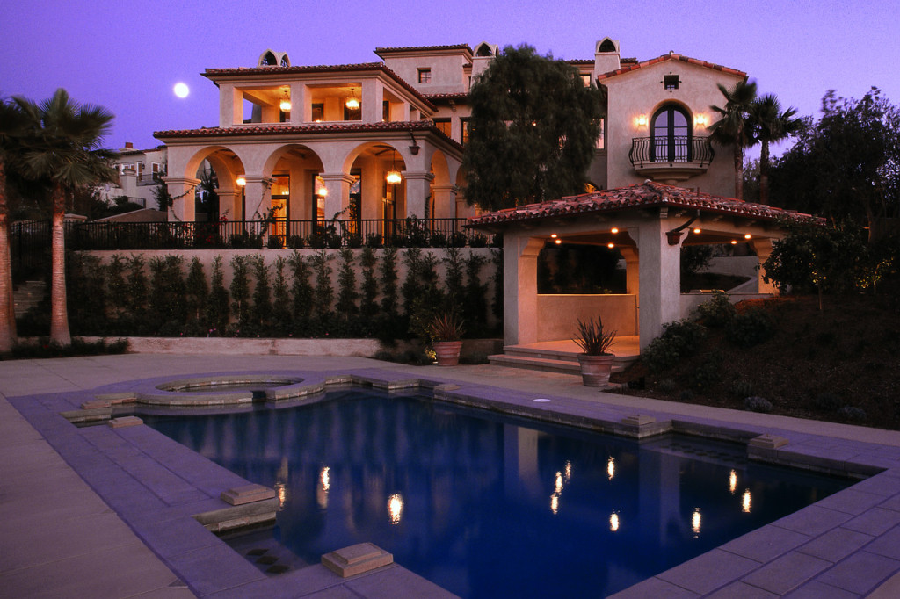

O-Rings…
There are many items worth checking through out the season. Simple checks are as common as making sure the pump lid o-ring is properly lubricated. Products like Jack's Lube or Magic Lube can give the proper lubrication to o-rings to help maintain longer life of the o-rings.
Pump Baskets…
Another thing that should be checked is your pump basket for cracks and splits. A cracked pump basket can allow debris to clog your impeller. This can cause loss of flow, that can lead to poor filtration and other water clarity problems.
D.E. Filters…
For D.E. filter owners, it is a good practice to clean the filter grids thoroughly mid-season. Opening the filter and removing the entire grid assembly and hosing off all the D.E. from the grids is a wise move. With too much D.E. in the filter, the grids can bridge together and cause high filter pressure and poor filtration.
Ladders and Diving Boards…
It is VERY important to check your ladder, handrail, and diving board bolts and hardware. When the bolts are not tightened properly it can be dangerous and cause injuries. If you have a diving board, always check it for cracks and rusty bolts. Also, check your ladder and handrail bolts. It is important that they are tight. Make sure the ladder or handrail do not rock. If this happens, it is wise to replace the hardware to prevent injury.
Need Jupiter Pool Maintenance? Contact Jupiter Pool Cleaners to REQUEST A QUOTE TODAY!
Equipment Area…
You may want to check your equipment area for leaves, grass and mulch. It may look nice, but heavily landscaped equipment areas cause problems. If equipment is covered with various types of debris it can cause the pump to over heat and wear out or burn up.
Electric…
Check to make sure all wire connections and conduits are intact. If it is split or cracked, electrical tape is not the proper repair; have them replaced. Unsafe electrical conditions can cause injury or even death. Almost all electrical work should be done by a licensed professional.
Skimmer Baskets…
Another area you will want to check is the skimmer baskets. Check for cracks and splits. This can cause unwanted debris in the pump basket. Also check the skimmer housing for cracks. Most small cracks can be repaired before they crack completely and need to be replaced. This is a VERY costly repair.
Safety Covers…
For those of you that have safety covers, such as Loop-Loc safety covers, you should check your anchors to make sure they thread out or pop-up properly. Also check to see if they are still secure in the concrete or wood deck. If the anchors are not anchored properly have them re-secured as soon as possible.
In-Floor Cleaning Systems…
On in-floor cleaning systems, at the distribution system, there is an in-line filter. It is located at the union going to the unit. This filter should be checked and cleaned regularly. If it is clogged, it can cause the in-floor system to not work properly.
Heaters…
Pool owners with heaters should test the heater from time to time if it is not being used. Not only to make sure it is working, but to prevent rodent infestation. These pesky critters can do a lot of damage to heaters. Some desert regions even go as far as doing rodent proofing around the pool area.
Auto Fills…
It is wise to check your auto fills from time to time. Make sure the float operates properly and shuts off at the appropriate level. When these floats malfunction they will over flow your pool and raise your water bill. Better safe than sorry!
Need Jupiter Pool Maintenance? Contact Jupiter Pool Cleaners to REQUEST A QUOTE TODAY!